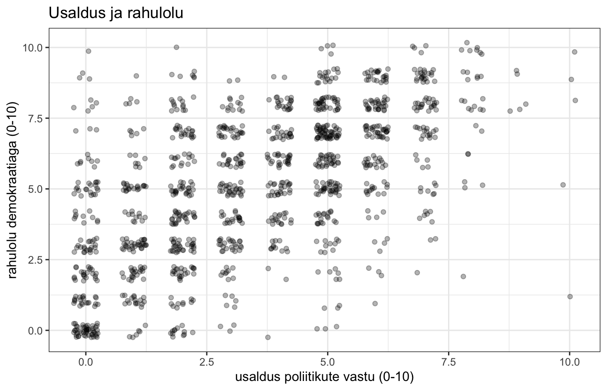
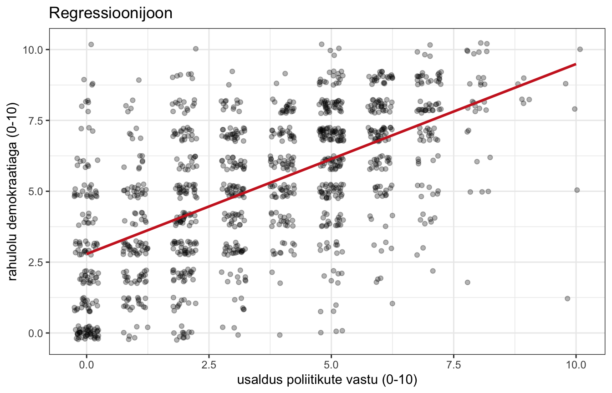

library(dplyr)
library(ggplot2)
load("data/ess11_ee_clean.rdata")8. Korrelatsioon ja regressioon
Siiani oleme võrrelnud gruppe. Nüüd hakkame vaatama seost kahe pideva muutuja vahel.
Kaks tööriista, mis on omavahel tihedalt seotud:
- korrelatsioon ütleb, kui tugev seos on ja mis suunas ta käib;
- regressioon ütleb, milline seos täpselt on — kui palju üks muutuja muutub, kui teine muutub ühe ühiku võrra.
Hajuvusdiagramm
Alusta alati pildist. Vaatame, kuidas on omavahel seotud usaldus poliitikute vastu ja rahulolu demokraatiaga.
ggplot(data, aes(x = usaldus_pol, y = rahulolu_dem)) +
geom_point() +
labs(
x = "usaldus poliitikute vastu (0-10)",
y = "rahulolu demokraatiaga (0-10)",
title = "Usaldus ja rahulolu"
) +
theme_bw()
Punktid on ridades, sest mõlemad muutujad võtavad ainult täisarvulisi väärtusi. Väga palju vastajaid satub täpselt üksteise peale ja me ei näe, kui palju neid kuskil on.
Selle vastu on kaks abinõu.
geom_jitter()nihutab iga punkti natuke juhuslikult paigast, nii et nad ei kata üksteist. Argumendidwidthjaheightmääravad, kui palju.- Argument
alphateeb punktid läbipaistvaks.
ggplot(data, aes(x = usaldus_pol, y = rahulolu_dem)) +
geom_jitter(width = 0.25, height = 0.25, alpha = 0.3) +
labs(
x = "usaldus poliitikute vastu (0-10)",
y = "rahulolu demokraatiaga (0-10)",
title = "Usaldus ja rahulolu"
) +
theme_bw()
Nüüd on näha, et seos on olemas ja ta on positiivne: mida rohkem usaldust, seda rohkem rahulolu.
geom_jitter()muudab andmeid ainult joonisel, mitte andmestikus. Ta on ettenähtud just selleks, et jaotust paremini näidata. Aga ole ettevaatlik: kui nihe on liiga suur, hakkab joonis valetama.
Kovariatsioonist korrelatsioonini
Kuidas seda seost arvuliselt mõõta?
Idee on lihtne ja ta tuleb kahes sammus.
Esimene samm: kas hälbed käivad koos?
Iga inimese kohta saab küsida kaks asja: kas ta on usalduse poolest keskmisest üle või alla, ja kas ta on rahulolu poolest keskmisest üle või alla.
Nüüd vaata, kuidas need kaks kokku langevad.
| Usaldus | Rahulolu | Mida see näitab |
|---|---|---|
| üle keskmise | üle keskmise | käivad koos |
| alla keskmise | alla keskmise | käivad koos |
| üle keskmise | alla keskmise | käivad vastu |
| alla keskmise | üle keskmise | käivad vastu |
Kui enamik inimesi on kahes esimeses reas, siis liiguvad muutujad samas suunas ja seos on positiivne. Kui enamik on kahes viimases, siis on seos negatiivne. Kui nad jagunevad umbes pooleks, siis seost ei ole.
Selle kokkuvõtet nimetatakse kovariatsiooniks.
Teine samm: tee arv võrreldavaks.
Kovariatsioonil on üks tüütu omadus: tema suurus sõltub mõõtskaalast. Kui mõõta sissetulekut eurodes, tuleb üks arv; kui tuhandetes eurodes, tuleb tuhat korda väiksem arv. Seos ise on täpselt sama, aga number on erinev.
See tähendab, et kovariatsiooni suurust ei saa millegagi võrrelda. Ta ütleb suuna, aga mitte tugevust.
Korrelatsioon lahendab selle. Ta on kovariatsioon, mis on taandatud mõlema muutuja hajuvusega — nii kaob mõõtühik ära ja alles jääb puhas seos.
Tulemus jääb alati −1 ja +1 vahele, ükskõik mis skaalal muutujad on. Ja just see teebki temast kasutatava arvu: kahte korrelatsiooni saab omavahel võrrelda, kahte kovariatsiooni mitte.
Alustame sealt, kus praktikumis 6 pooleli jäime.
Dispersioon mõõtis, kui kaugel on väärtused oma keskmisest. Kirjutame ta lahti nii, et hälve on korrutatud iseendaga:
\[s^2 = \frac{\sum(x_i-\bar{x}) \times (x_i-\bar{x})}{n-1}\]
Kovariatsioon on ainult natuke teistmoodi. Iga juhtumi puhul korrutame ühe muutuja hälbe keskmisest teise muutuja hälbega keskmisest:
\[cov(x,y) = \frac{\sum(x_i-\bar{x}) \times (y_i-\bar{y})}{n-1}\]
Mõtle läbi, mis siin toimub.
- Kui mõlemad hälbed on positiivsed (mõlemad üle keskmise), on korrutis positiivne.
- Kui mõlemad on negatiivsed (mõlemad alla keskmise), on korrutis samuti positiivne.
- Kui nad on eri suundades, on korrutis negatiivne.
Seega: kui hälbed on üldiselt samas suunas, tuleb kovariatsioon positiivne. Kui vastassuundades, siis negatiivne.
Korrelatsioon on standardiseeritud kovariatsioon — jagame ta mõlema muutuja standardhälbega:
\[r = \frac{\sum(x_i-\bar{x}) \times (y_i-\bar{y})}{(n-1) \times \sigma_x \times \sigma_y}\]
Nii saame arvu, mis jääb alati −1 ja +1 vahele, sõltumata mõõtskaalast.
Arvutame ta käsitsi läbi. Kirjutame iga sammu eraldi reale, et oleks näha, mis toimub.
alam <- na.omit(data[, c("usaldus_pol", "rahulolu_dem")])
halve_x <- alam$usaldus_pol - mean(alam$usaldus_pol)
halve_y <- alam$rahulolu_dem - mean(alam$rahulolu_dem)
korrutiste_summa <- sum(halve_x * halve_y)
nimetaja <- (nrow(alam) - 1) * sd(alam$usaldus_pol) * sd(alam$rahulolu_dem)
korrutiste_summa / nimetaja## [1] 0.59636Pearsoni korrelatsioon
Loomulikult on selleks R-is funktsioon — cor(), mida oleme juba praktikumis 4 kasutanud.
cor(alam$usaldus_pol, alam$rahulolu_dem)## [1] 0.59636Sama arv.
Kuidas teda tõlgendada?
| Väärtus | Tähendus |
|---|---|
| −1 | täiuslik negatiivne seos |
| 0 | seost ei ole |
| +1 | täiuslik positiivne seos |
Positiivne seos tähendab, et kui ühe muutuja väärtused kasvavad, kasvavad ka teise omad. Negatiivne seos tähendab vastupidist.
Reaalsuses täiuslikku seost kahe erineva nähtuse vahel ei eksisteeri. Muutuja korrelatsioon iseendaga on 1. Kui sa näed oma andmetes korrelatsiooni, mis on väga lähedal ühele, siis on peaaegu kindlasti midagi valesti — tõenäoliselt mõõdad sa kaks korda sama asja.
Hüpoteesi test
Ka korrelatsiooni kohta saab teha hüpoteesi testi. Nullhüpotees on, et korrelatsioon populatsioonis on null. Funktsioon on cor.test().
cor.test(alam$usaldus_pol, alam$rahulolu_dem)##
## Pearson's product-moment correlation
##
## data: alam$usaldus_pol and alam$rahulolu_dem
## t = 25.907, df = 1216, p-value < 2.2e-16
## alternative hypothesis: true correlation is not equal to 0
## 95 percent confidence interval:
## 0.5589123 0.6313802
## sample estimates:
## cor
## 0.59636Väljund on väga sarnane t-testi omale — sest loogika ongi täpselt sama. Meil on t-väärtus, vabadusastmed, p-väärtus ja usaldusvahemik.
Seose tugevus: R-ruut
Korrelatsioonikordaja ruutu nimetatakse determinatsioonikordajaks ehk R-ruuduks.
cor(alam$usaldus_pol, alam$rahulolu_dem)^2## [1] 0.3556452R-ruut näitab, kui suur osa ühe muutuja varieeruvusest on seotud teise muutuja varieeruvusega. Antud juhul umbes 30% — usaldus poliitikute vastu aitab seletada ligikaudu kolmandiku rahulolust demokraatiaga.
R-ruut on tõlgendatav protsendina, korrelatsioonikordaja mitte.
Korrelatsioonikordaja on skaalal −1 kuni 1, aga see skaala ei ole ühtlane. Väärtus 0,5 ei tähenda “poole nõrgem seos kui 1,0” ega “pool maksimaalsest seosest”. Kaks korda suurem r ei tähenda kaks korda tugevamat seost.
R-ruut on seevastu päris protsent: 0,30 tähendab tõesti “30% varieeruvusest”. Ja pane tähele, mis juhtub ruutu võttes — korrelatsioon 0,5 annab R-ruudu 0,25, seega seletab ta neljandiku, mitte poolt. Korrelatsioon 0,7 annab ligi poole.
Seetõttu räägi seose tugevusest R-ruudu kaudu, mitte korrelatsioonikordaja kaudu.
Joon läbi punktipilve
Korrelatsioon ütles meile suuna ja tugevuse. Aga ta ei ütle, kui palju rahulolu muutub, kui usaldus kasvab ühe punkti võrra.
Selleks tuleb tõmmata punktipilvest läbi joon. Joonisele lisab trendijoone funktsioon stat_smooth(). Argument method = "lm" ütleb, et joon peab olema sirge (linear model), ja se = FALSE peidab joone ümbert usaldusvahemiku.
ggplot(alam, aes(x = usaldus_pol, y = rahulolu_dem)) +
geom_jitter(width = 0.25, height = 0.25, alpha = 0.3) +
stat_smooth(method = "lm", se = FALSE, color = "firebrick3") +
labs(
x = "usaldus poliitikute vastu (0-10)",
y = "rahulolu demokraatiaga (0-10)",
title = "Regressioonijoon"
) +
theme_bw()
Võimalikke jooni läbi selle pilve oleks lõpmata palju. Kõige parem joon on see, mille ennustusviga on kõige väiksem — täpsemalt see, mille puhul punktide kauguste ruutude summa joonest on kõige väiksem.
Regressioonivalem
Sirge võrrand on koolimatemaatikast tuttav:
\[Y = a \times X + b\]
Regressioonis kirjutatakse ta tavaliselt nii:
\[Y_i = \beta_0 + \beta_1 \times X_i + e_i\]
kus
- \(\beta_0\) on vabaliige (intercept) — koht, kus joon läbib y-telge, ehk ennustatud väärtus siis, kui X on null;
- \(\beta_1\) on regressioonikordaja (slope) — kui palju Y muutub, kui X kasvab ühe ühiku võrra;
- \(e_i\) on jääk (residual) — see osa, mida mudel ei seleta.
Mudeli sobitamine ja tõlgendamine
Regressiooni tegemiseks on funktsioon lm(), mida nägime möödaminnes juba praktikumis 3. Nüüd vaatame teda korralikult.
Valem kirjutatakse tildega: sõltuv muutuja ~ sõltumatu muutuja. Argument data ütleb, millisest andmetabelist muutujaid otsida.
Tulemused tuleb panna objekti ja vaadata funktsiooniga summary().
mudel <- lm(rahulolu_dem ~ usaldus_pol, data = data)
summary(mudel)##
## Call:
## lm(formula = rahulolu_dem ~ usaldus_pol, data = data)
##
## Residuals:
## Min 1Q Median 3Q Max
## -8.4891 -1.4682 0.1915 1.5318 7.2125
##
## Coefficients:
## Estimate Std. Error t value Pr(>|t|)
## (Intercept) 2.78754 0.10819 25.77 <2e-16 ***
## usaldus_pol 0.67015 0.02587 25.91 <2e-16 ***
## ---
## Signif. codes: 0 '***' 0.001 '**' 0.01 '*' 0.05 '.' 0.1 ' ' 1
##
## Residual standard error: 2.097 on 1216 degrees of freedom
## (75 observations deleted due to missingness)
## Multiple R-squared: 0.3556, Adjusted R-squared: 0.3551
## F-statistic: 671.2 on 1 and 1216 DF, p-value: < 2.2e-16Kuidas seda tabelit lugeda
Kõige tähtsam osa on Coefficients.
Estimate— koefitsiendi väärtus.Std. Error— selle koefitsiendi standardviga, ehk kui kindlad me temas oleme.t value— koefitsient jagatud standardveaga, ehk mitme standardvea kaugusel ta nullist on.Pr(>|t|)— p-väärtus. Nullhüpotees on, et koefitsient on null (seost ei ole).- Tärnid näitavad, millisesse vahemikku p-väärtus langeb.
Vabaliige ((Intercept)) on 2,54. See tähendab: kui usaldus poliitikute vastu on 0, siis on ennustatud rahulolu demokraatiaga 2,54.
Regressioonikordaja usaldus_pol juures on 0,55. See tähendab: iga punkt usalduse kasvu juures kasvab rahulolu demokraatiaga keskmiselt 0,55 punkti.
Koefitsiendi arvuline väärtus sõltub mõõtskaalast. Kui muutuja ühik on väike, on koefitsient väike, ja vastupidi. Vanust saab mõõta päevades, aastates või aastakümnetes ning koefitsient oleks igal juhul erinev — kuigi seos on täpselt sama.
Seetõttu ei saa koefitsientide suurusi omavahel võrrelda, kui muutujad on erineval skaalal. Proovi järele: jaga vanus sajaga ja vaata, mis koefitsiendiga juhtub.
Kui hea mudel on?
Selleks on tabeli lõpus Multiple R-squared — sama R-ruut, mida korrelatsiooni juures vaatasime. Ta ütleb, kui suure osa sõltuva muutuja varieeruvusest mudel ära seletab.
cor(alam$usaldus_pol, alam$rahulolu_dem)^2## [1] 0.3556452Sama arv, mille me korrelatsioonist saime. Kahe muutujaga regressiooni R-ruut ongi korrelatsiooni ruut.
Mis vahe on
Multiple R-squaredjaAdjusted R-squaredvahel? R-ruut kasvab alati, kui mudelisse muutujaid juurde panna — isegi siis, kui need muutujad on täiesti mõttetud. Kohandatud R-ruut karistab mudelit iga lisatud muutuja eest. Tõlgendamiseks kasuta kohandatud R-ruutu.
Sotsiaalteadustes on R-ruut tavaliselt madal. Mudel, mis seletab 10–20% varieeruvusest, on täiesti tavaline ja võib olla väga kasulik. Inimeste käitumine ei ole füüsika.
Koefitsientide standardiseerimine
Regressioonikoefitsiendi suurus sõltub muutuja mõõtskaalast. See tähendab, et kahe erineva muutuja koefitsiente ei saa omavahel võrrelda, kui nad on erineval skaalal.
Meie mudelis on usaldus skaalal 0–10 ja vanus aastates. Kumb on tugevam seletaja? Koefitsientidest seda välja ei loe — nad on eri ühikutes.
mudel_kaks <- lm(rahulolu_dem ~ usaldus_pol + vanus, data = data)
round(coef(mudel_kaks), 4)## (Intercept) usaldus_pol vanus
## 3.2321 0.6606 -0.0082Vanuse koefitsient on peaaegu null ja usalduse oma palju suurem. Aga see ei tähenda, et vanus oleks ebaoluline — tähendab ainult, et üks eluaasta on väike samm, samal ajal kui üks usalduspunkt on suur samm.
Lahendus on muutujad enne mudelisse panekut standardiseerida. Standardiseerimine tähendab, et igast muutujast tehakse z-skoor — täpselt see tehe, mida nägime praktikumis 6. Pärast seda on iga muutuja keskmine 0 ja standardhälve 1, ehk kõik on samal skaalal.
R-is teeb seda funktsioon scale().
data$usaldus_z <- scale(data$usaldus_pol)
data$vanus_z <- scale(data$vanus)
data$rahulolu_z <- scale(data$rahulolu_dem)
mudel_std <- lm(rahulolu_z ~ usaldus_z + vanus_z, data = data)
round(coef(mudel_std), 4)## (Intercept) usaldus_z vanus_z
## -0.0043 0.5919 -0.0566Nüüd on koefitsiendid võrreldavad. Neid nimetatakse standardiseeritud koefitsientideks ehk beeta-koefitsientideks.
Kuidas neid lugeda? Koefitsient ütleb, mitu standardhälvet muutub sõltuv muutuja, kui sõltumatu muutuja kasvab ühe standardhälbe võrra.
Usalduse koefitsient on umbes kümme korda suurem kui vanuse oma. Ehk: usaldus on rahulolu seletamisel palju tugevam tegur.
Millal standardiseerida ja millal mitte?
Standardiseeri siis, kui sa tahad võrrelda erinevate muutujate suhtelist tugevust ühes mudelis.
Ära standardiseeri siis, kui muutujal on sisuliselt tähendusrikas ühik. “Iga eluaasta kohta 0,01 punkti” on arusaadav lause. “Iga standardhälbe kohta 0,08 standardhälvet” ei ole.
Ja binaarseid muutujaid ei ole üldse mõtet standardiseerida — “pool standardhälvet meheks olemist” ei tähenda midagi.
Harjutus. Lisa standardiseeritud mudelisse ka haridus. Milline kolmest muutujast on kõige tugevam seletaja? Kontrolli, kas sama järjekord tuleb välja ka standardiseerimata mudelist — ja mõtle, miks see nii on või ei ole.
Kuidas seda kirja panna
NõuanneKuidas seda kirja panna
Korrelatsiooni puhul tuleb esitada korrelatsioonikordaja, p-väärtus, usaldusvahemik, juhtumite arv ja seose sisuline tõlgendus:
Usaldus poliitikute vastu ja rahulolu demokraatiaga on omavahel tugevalt seotud (r = 0,55; p < 0,001; 95% usaldusvahemik 0,51–0,58; n = 1220). Seos on positiivne: mida rohkem inimene poliitikuid usaldab, seda rahulolevam ta demokraatia toimimisega on. Determinatsioonikordaja (r² = 0,30) näitab, et need kaks nähtust jagavad ligikaudu kolmandiku oma varieeruvusest.
Regressiooni puhul tuleb lisaks öelda, mida koefitsient sisuliselt tähendab — ühikutes, mitte ainult arvuna:
Lineaarne regressioon näitas, et usaldus poliitikute vastu ennustab rahulolu demokraatiaga statistiliselt olulisel määral (β = 0,55; SE = 0,02; p < 0,001). Iga punkti võrra suurem usaldus poliitikute vastu vastab keskmiselt 0,55 punkti võrra suuremale rahulolule demokraatiaga (mõlemad skaalal 0–10). Mudel seletab 30% rahulolu varieeruvusest (kohandatud R² = 0,30).
Ja kõige tähtsam hoiatus. Korrelatsioon ei ole põhjuslikkus. Meie mudel ei tõesta, et usaldus põhjustab rahulolu. Sama hästi võib rahulolu põhjustada usaldust, või võib mõlemat põhjustada midagi kolmandat. Regressioonivalemi kuju — üks muutuja vasakul, teine paremal — ei tähenda mitte midagi põhjuslikkuse kohta.
Kirjuta “on seotud” ja “vastab”, mitte “põhjustab” ja “mõjutab”, kui sul ei ole põhjuslikkuse väitmiseks eraldi head argumenti.
Harjutused
1. Korrelatsioon. Arvuta korrelatsioon muutujate usaldus ja rahulolu_dem vahel. Tee ka hüpoteesi test. Kui tugev seos on ja kui suure osa varieeruvusest ta seletab?
2. Joonis. Tee nende kahe muutuja kohta hajuvusdiagramm koos regressioonijoonega.
3. Regressioon. Sobita mudel, kus ranne on sõltuv muutuja ja haridus sõltumatu. Kuidas tõlgendad koefitsienti? Kirjuta tulemus välja korrektses vormis.
4. Skaala mõju. Jaga muutuja vanus kümnega (nii mõõdad vanust aastakümnetes) ja sobita mudel rahulolu_dem ~ vanus. Võrdle koefitsienti algse mudeliga. Mis muutus ja mis jäi samaks?